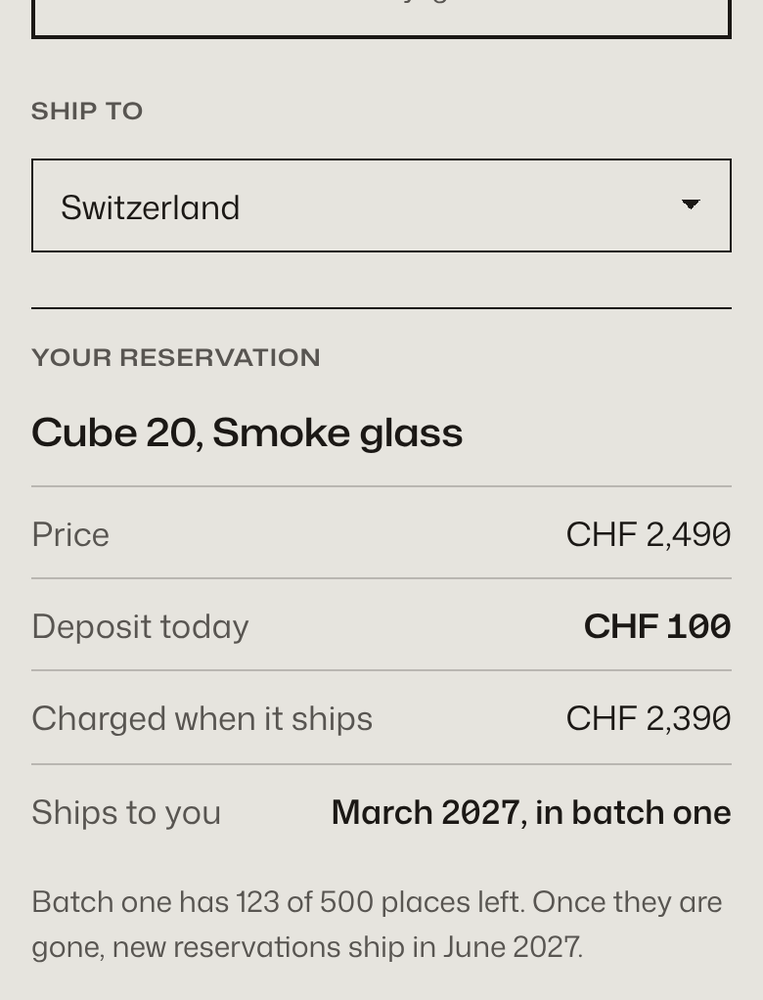
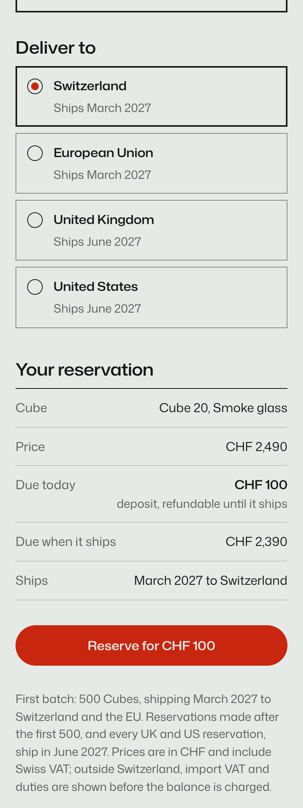
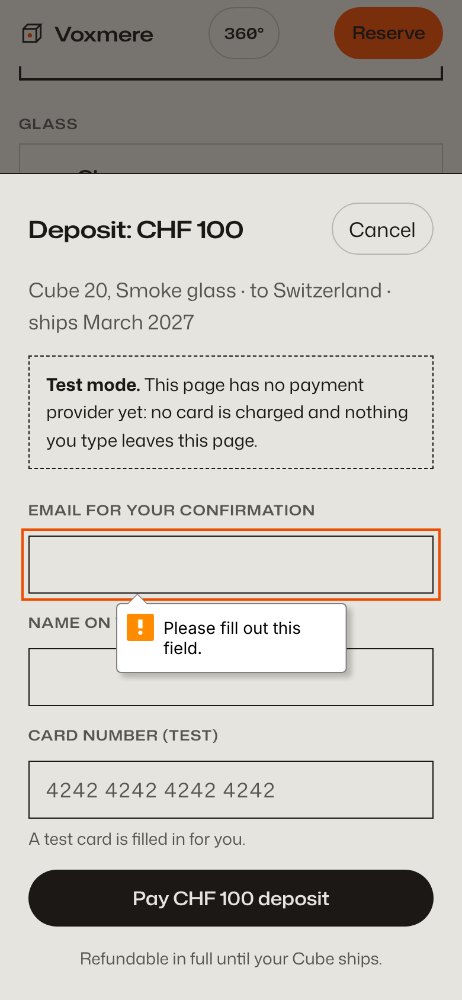
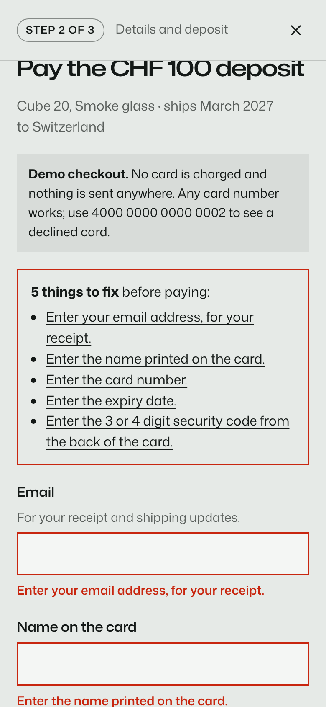
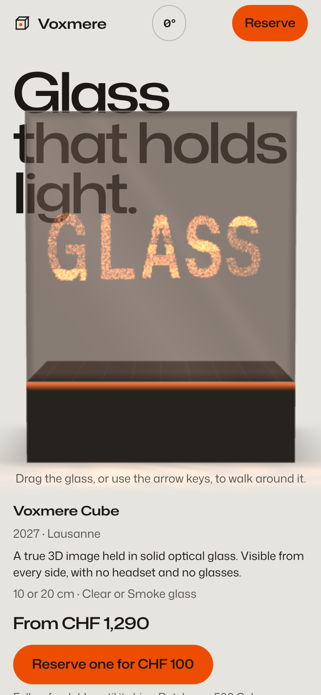
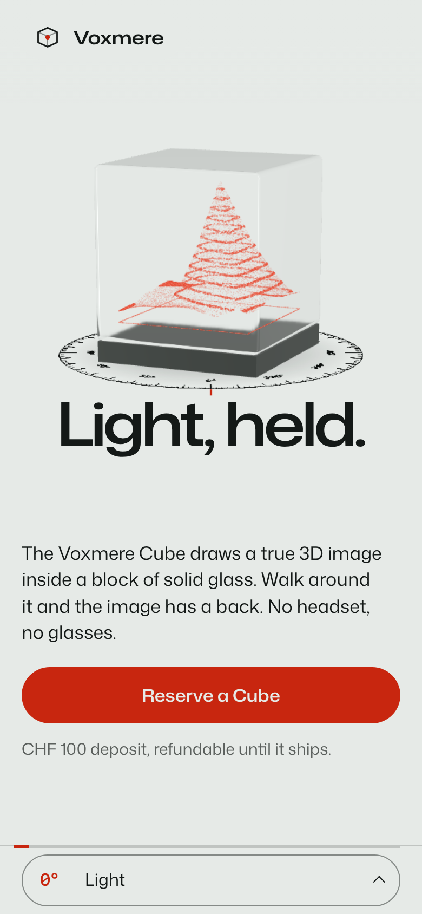

AAwards
Jury 7.65 · fix
Open Exhibit A full size ↗
The Voxmere case · UXL-DEMO-003 · 21 Oct 2026
Two fresh Claude Code sessions got the same prompt: a site for Voxmere, a fictional deep-tech startup whose glass cube holds a true 3D image, and whose brief asks outright for Awwwards Site of the Day: “push it, be experimental”. Both ran the same model at effort xhigh with the awards plugin. Exhibit B also had UXL installed. The prompt names neither skill and never says “UX”.
We’re Voxmere, a (fictional) deep-tech startup from Lausanne. We’ve built the first display that shows true 3D holograms inside a solid block of glass: you can walk around it and see the image from every side, with no headset and no glasses. Our first product is the Voxmere Cube, in two sizes: Cube 10 (10 cm, CHF 1,290) and Cube 20 (20 cm, CHF 2,490), each in Clear or Smoke glass. You reserve one with a CHF 100 deposit that’s fully refundable until it ships; the rest is charged when your Cube ships. The first batch of 500 Cubes ships in March 2027 to Switzerland and the EU; the UK and the US follow in June 2027, and so does every reservation made after the first batch is gone.
Our website is the first hologram most people will ever see from us, so it has to be as far ahead as the product. We want it to win Awwwards Site of the Day and FWA of the Day: push it, be experimental, make it the site other designers share. Build it as a single self-contained index.html: inline all CSS and JS. Libraries like GSAP, Lenis or Three.js are fine, but install them from npm and inline them, because the page can’t load anything from a CDN. Google Fonts are OK, but no external images, so draw everything with CSS, SVG, canvas or WebGL. It should tell the story of how a block of glass learned to hold light, let people explore the Cube and compare the two sizes, and let them reserve one: choose size and finish, and see the price, the deposit and when it ships to them. We don’t have a payment backend yet, so fake the payment step. It has to work great on phones and desktop.
The film
Recorded from the two published pages, frame by frame, and edited in code with Remotion. No sound.
The exhibits · live
These are the real, unedited files. Turn the glass, scroll the story and reserve a Cube. Both pages fake the payment, and nothing leaves your browser.
The scoreboard
After both sessions ended, each page went to a fresh session that ran the awards jury on the file alone. The folders were renamed, so the juror could not tell which exhibit it was judging. Weights are the jury’s own: Design 40, Usability 30, Creativity 20, Content 10. Site of the Day territory starts at 7.2 with no axis under 6.8.
| Axis (weight) | Exhibit A · awards | Exhibit B · awards + UXL |
|---|---|---|
| Design (40) | 7.7 | 8.0 |
| Usability (30) | 7.0 capped | 7.0 capped |
| Creativity (20) | 8.3 | 8.4 |
| Content (10) | 8.1 | 8.5 |
| Weighted | 7.65 | 7.83 |
| Disposition | fix | ship |
The blind jury barely separates the two. Both Usability scores sit at the 7.0 cap, each held there by one failed check. Exhibit A’s is the 41 px chapter button on phones, the same button UXL’s auditor flagged as major (§L07 Fitts’s Law); without the cap the juror puts A’s Usability near 8.5. Exhibit B’s is wayfinding: the chapter readout lags at Glass, and the jury folder had no 404 page. The second half is on us: B shipped its 404 as a separate file, and, as in the Lumenvale run, only index.html went to the juror. Exhibit A’s 404 lives inside its index.html. Without the cap the juror puts B’s Usability near 8.2. A’s “fix” comes from two static-audit findings on its minified file that the juror itself calls false positives. B scored higher on Design and Content, but both concepts came from awards:concept before UXL was called, so read those rows as one run’s variation.
| Measure | Exhibit A · awards | Exhibit B · awards + UXL |
|---|---|---|
| UXL runtime audit score | 86 / 100 (2 major) | 96 / 100 (0 major) |
| UXL static lint score | 100 | 100 |
| Phone tap targets under 44 px | 1 of 34, the chapter dial at 41 px | 0 of 25 |
| Filled buttons in the first phone screen | 2 | 1 |
| Headline in the first phone screen | behind the glass, partly covered | under the cube, fully legible |
| Choosing where it ships | a 30-country dropdown; the ship month appears after you pick | 4 regions, each showing its ship month |
| Scarcity | “123 of 500 places left”, from a hard-coded number | the batch rule, stated; no counter |
| Checkout progress | none | Step 1, 2 and 3 of 3 |
| Payment form submitted empty | the browser’s bubble on the first field | all five problems listed, focus moved to the list |
| Declined card | no path | test number 4000 0000 0000 0002, a clear message, nothing charged |
| After paying | a receipt | a receipt and “What happens next” |
| Taxes | not mentioned | Swiss VAT included; import VAT and duties shown before the balance |
| In-session awards jury, final round | 7.93, Usability 7.7 · ship | 7.83, Usability 7.8 · fix |
Scanner scores are heuristics, and this is one run per condition. The in-session juries each judged their own build mid-session, so only the blind run compares like with like. Raw data: data.json, audit A, audit B, B’s first UXL audit, blind jury A, blind jury B, how B used UXL, event by event.
How the two skills worked together
Both sessions walked the same awards pipeline, from direction to ship. Session B called UXL on its own before it wrote any markup, then ran UXL’s linter and auditor before its first jury and again before hand-off. It cost B one more minute and $0.95.
awards skillUXL, called by the session itself
Four seconds after awards:structure loaded, session B called UXL with this brief, verbatim:
Apply the laws while building the static skeleton and the reservation flow.
It read UXL’s playbook for navigation, calls to action, forms, checkout, modals and multi-step flows, then wrote one line into its page map:
UXL: one primary per view, labels above inputs, autocomplete, card grouping, decline path (4000 0000 0000 0002), never-disabled submit, selection saved to localStorage, no scarcity counter.
With the WebGL layer in, B ran UXL’s linter and auditor before its first jury round. The audit scored 80 with three major findings: the hero headline and the Reserve button measured 1.00:1 contrast. B first planned to log them as exceptions, looked at the annotated screenshot, and rebuilt the layering instead. The next audit scored 93, the final one 96 with no majors.
B’s awards jury asked for the headline behind the glass on phones too. B declined and wrote down why:
the phone keeps a legible <h1> under the cube (UXL §L05 Cognitive Load, §L25 Selective Attention); the refraction stays a desktop moment.
Exhibit A’s jury asked for the same thing, and A did it.
The counts
Each count quotes session B in its own words, shows what shipped, and puts Exhibit A, which never saw UXL, next to it. B wrote no case file this time, so the quotes come from its contract, its design spec and its scanner runs.
A first batch of 500 begs for a counter, and both sessions planned one. Session B’s brief, written before it called UXL, says “the ‘first-batch remaining’ figure is a fictional counter”. After UXL, the counter was gone and the brief said why. Exhibit A shipped it: “Batch one has 123 of 500 places left”, worked out from a constant. A’s hand-off tells the client the number is made up. The page tells visitors nothing of the kind.
Session B’s brief, after UXL, verbatimDeliberately absent: a “first batch remaining” counter (it would be invented scarcity, UXL §L04)


const TAKEN_BEFORE_VISIT = 377; // Exhibit A, src/js/ui/reserve.js: the "places left" source
First batch: 500 Cubes, shipping March 2027 to Switzerland and the EU. Reservations made after
the first 500, and every UK and US reservation, ship in June 2027. // Exhibit B, under the summaryFindingExhibit A shows urgency nobody counted. Exhibit B compliant.
There are only two ship dates, and they depend on where you live. Exhibit A asks you to pick one of 30 countries from a dropdown, then tells you the month in the summary below. Exhibit B offers four regions and prints the month inside each option, so the choice and its consequence sit together. Both captures are in Count 1.
Session B’s design spec, verbatimthe ship month sits inside each region option (recognition over recall, §L29)
FindingExhibit A works, but hides two dates behind 30 options. Exhibit B compliant.
Both pages say plainly that the payment is a demo. Exhibit A fills in a test card and leans on the browser: submit the form empty and a bubble points at the first field, with no word on what else is missing. Exhibit B counts its steps, lists every problem at once with a link to each field, moves focus to that list, and has a declined-card path. Its submit button is never disabled to signal a mistake.
Session B’s design spec, verbatimNever disabled to signal invalid input (UXL §L24). One per view (§L28).


Exhibit A empty submit → focus: input#pay-email
Exhibit B empty submit → focus: div#pay-errors "5 things to fix before paying"
Exhibit B declined card → "Your card was declined (demo). Nothing was charged. Try a different card number."FindingExhibit A is adequate for a demo. Exhibit B handles failure.
Both concepts put the headline behind the glass, so the cube bends the words. On a 1440 px screen that works in both. On a phone the cube covers most of the line. Both awards juries asked for the effect on phones anyway. Exhibit A complied, and its first phone screen reads “Glass” and then smoked glass. Exhibit B refused, citing two laws, and kept the refraction for desktop.
Session B’s jury log, verbatimNot applied: 1) on a 390 px phone the glass covers nearly the whole word (the first phone build read “L ght, h t, ld.”), so the phone keeps a legible <h1> under the cube (UXL §L05 Cognitive Load, §L25 Selective Attention); the refraction stays a desktop moment.


FindingExhibit A trades its first phone sentence for the effect. Exhibit B compliant.
B’s first build looked right. Its headline, its first-screen copy and the ground behind them were painted in the WebGL canvas, and the real text in the page was transparent. A screenshot can’t tell. UXL’s auditor measured the text itself and found 1.00:1 contrast, which means anything that reads the page instead of the canvas would get nothing: a screen reader’s highlight, a print, a failed GPU. B moved every word and background back into the page and let the canvas draw only the cubes. Exhibit A had kept its headline as real text from the start.
UXL audit, B’s first run, verbatimh1#light-title "Light, held." 1.00:1 (needs 3:1); div.hero-copy > div.hero-action > a.btn.btn-primary "Reserve a Cube" 1.00:1 (needs 4.5:1)
Session B, after looking at the annotated screenshotI found that the ground and headline only exist in canvas, making them invisible to screenshots, prints, or CSS readers. I’m restructuring so the canvas draws only the cubes above a transparent page, while the real background and headline live in the DOM, with the glass still refracting them via its transmission buffer.
.gl-headline .hero-title { color: transparent; } /* site.css, removed */
Canvas model: one fixed, transparent canvas over the page… every word and background on the page
stays real DOM (no transparent text, correct in print, full-page captures and contrast tools) // AWARDS.mdFindingExhibit A compliant. Exhibit B’s bug caught by the audit and fixed before the first jury.
For the record
Verdict
Both sessions built an award-grade page, and a blind awards jury barely tells them apart: 7.83 against 7.65, both with Usability at its cap. The jury scores what a juror sees. UXL changed what a buyer meets: no invented scarcity next to a CHF 100 deposit, the ship month where the choice is made, a checkout that explains failure, and a first phone sentence you can read. Session B planned the same counter A shipped, then took it out after reading UXL. That cost one more minute and $0.95. UXL also missed three things B’s own jury caught, so the two reviews belong together.
Reproduce it
Same prompt, same model, effort xhigh, two empty folders. Both get the awards plugin; B also gets UXL. Then score both with UXL’s scanners and a blind awards jury, and cut the film.
git clone https://github.com/BurgiSimon/awards
git clone https://github.com/BurgiSimon/UXL
mkdir a b
# Exhibit A: awards only
(cd a && claude -p "$(cat ../PROMPT.txt)" --model "$MODEL" --effort xhigh \
--plugin-dir ../awards/plugins/awards)
# Exhibit B: awards + UXL
(cd b && claude -p "$(cat ../PROMPT.txt)" --model "$MODEL" --effort xhigh \
--plugin-dir ../awards/plugins/awards --plugin-dir ../UXL)
# The evidence (B built with Vite: use its release/index.html)
python3 UXL/tools/build_demo.py --without a --with b --prompt PROMPT.txt --slug voxmere
node UXL/tools/demo_evidence_voxmere.mjs
# The blind jury: copy each index.html into a neutrally named folder, keep the logs outside it, then
(cd site-p && claude -p "/awards:jury index.html --verdict" --model "$MODEL" --effort xhigh \
--plugin-dir ../awards/plugins/awards > ../logs/site-p.jsonl)
# The film
(cd UXL/video && npm i && npm run capture && npm run render)